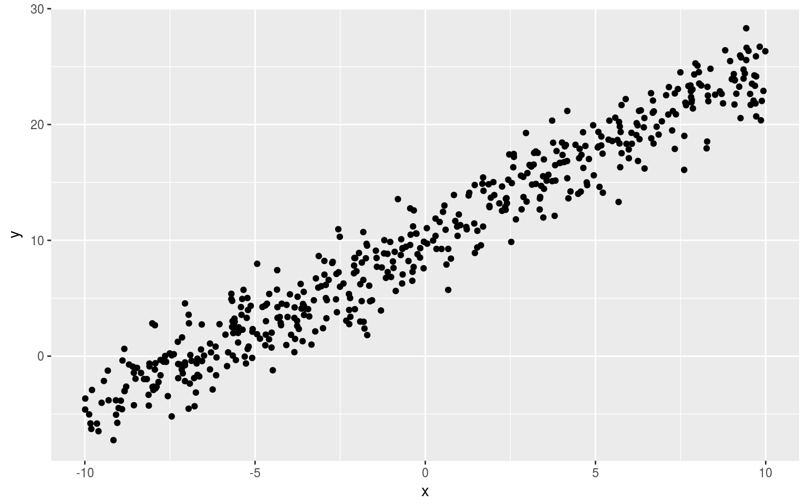
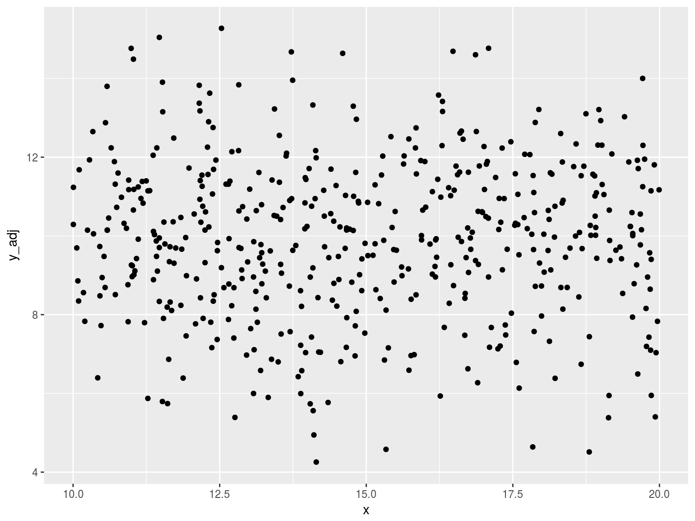
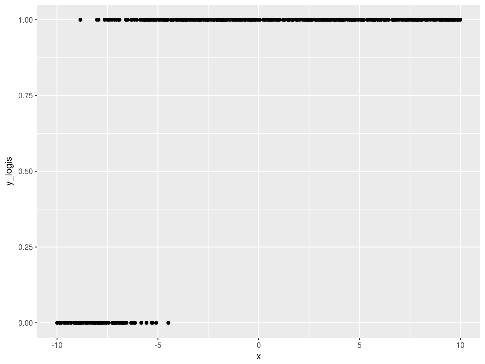

Linear Blues
What do these things have in common?
- Amy Winehouse - Rehab
- U2 - Still Haven’t Found What I’m Looking For
- Tracy Chapman - Give Me One Reason
- Prince - Purple Rain
- The Clash - Should I Stay or Should I Go?
- KC & The Sunshine Band - Boogie Shoes
- Steelers Wheel - Stuck in the Middle With You
- Pink Floyd - Money
- Led Zeppelin - Rock and Roll
- James Brown - I Got You (I Feel Good)
- The Beatles - Can’t Buy Me Love
- Johnny Cash - Folsom Prison Blues
- Miles Davis - All Blues
- Chuck Berry - Johnny B. Goode
- Robert Johnson - Sweet Home Chicago
The pattern
The variations

The variations
The linear pattern
The linear pattern
\[\mu_i=\beta_0 + \sum_{j=1}^{p}{(\beta_j * x_{ij})}+\epsilon_i\]
The linear pattern
\[\mu_i=\beta_0 + \sum_{j=1}^{p}{(\beta_j * x_{ij})}+\epsilon_i\]
i -> sample point
j -> predictor
\(E[\epsilon_i]=0\)
\(Var[\epsilon_i]=\sigma\)
\(Cov(\epsilon_i,\epsilon_j)=0, \forall i \neq j\)
Variations
\[\epsilon_i=\mu_i - \beta_0 - \sum_{j=1}^{p}{(\beta_j * x_{ij})}\]
Variation
Knowing that \(E[\epsilon_i]=0\), we can presume normality and use maximum likelihood to estimate \(\sigma\).
We just need to use values of \(\beta_0\) and \(\beta_j\) that will get \(\epsilon\) close to zero.
Let’s assume that we’ve done that. (More on this point later.)
Original Data

Subtract \(\sum_{j=1}^{p}{(\beta_j * x_{ij})}\)

Subtract intercept

We’re seeking noise
We presume that the observation is a linear transform of a random variable.
We’ve assumed a normal distribution, but do we have to?
Logistic
\[\epsilon_i \text{~} ~ logistic(0,1)\]
\[z_i=\beta_0 + \sum_{j=1}^{p}{\beta_j * x_{ij}}+\epsilon_i\]
\[y_i = \begin{cases} 1 & \text{if } z_i > 0 \\ 0 & \text{if } z_i < 0 \end{cases}\]
tbl_logistic <- tibble(
e = rlogis(sims)
, x = runif(sims, -10, 10)
) %>%
mutate(
latent = b_0 + b_1 * x + e
, y = as.integer(latent > 0)
)
The process
So we can use the same process to create a logistic regression!
- Random noise ->
- Linear transform ->
- Transform that result (optional) ->
- Observation
Gaussian and logistic are the only two distributions that I know of where we can get away with this. For other distributions …
The process in (sort of) reverse
Rather than assuming we start with noise and transform it, let’s start with (a function of) the observation.
\[E[Y_i]=\mu_i=\beta_0 + \sum_{j=1}^{p}{\beta_j * x_{ij}}\]
We lost \(\epsilon\) !
But we’re still using maximum likelihood. There’s a distribution in there.
Poisson

Speaking of maximum likelihood
Must we use a distribution?
Regularization
- Ridges reduces
- Lasso liminates
All the other stuff I didn’t cover
There’s so much more!
- Data pre-processing
- Polynomial
- Log
- Centering
- Other
Wrapping up
What do these things have in common?
- Amy Winehouse - Rehab
- U2 - Still Haven’t Found What I’m Looking For
- Tracy Chapman - Give Me One Reason
- Prince - Purple Rain
- The Clash - Should I Stay or Should I Go?
- KC & The Sunshine Band - Boogie Shoes
- Steelers Wheel - Stuck in the Middle With You
- Pink Floyd - Money
- Led Zeppelin - Rock and Roll
- James Brown - I Got You (I Feel Good)
- The Beatles - Can’t Buy Me Love
- Johnny Cash - Folsom Prison Blues
- Miles Davis - All Blues
- Chuck Berry - Johnny B. Goode
- Robert Johnson - Sweet Home Chicago
What do these things have in common?
- OLS
- GLM
- Logistic
- Poisson
- Tweedie
- Time series
- Regularization
- Lasso
\[\beta_0 + \sum_{j=1}^{p}{\beta_j * x_{ij}}\]
What do these things have in common?
- Distributional assumption
- Linear combination of (transformed) predictors
- Performance assessment of predictors
- Hypothesis tests
- Stepwise regression
- Tests of model fit
- AIC
- Testable statistical hypotheses
- Distributional form
- Independent error terms
- Predictor significance
- Assessment of residuals
“…magical dreamlike logic”